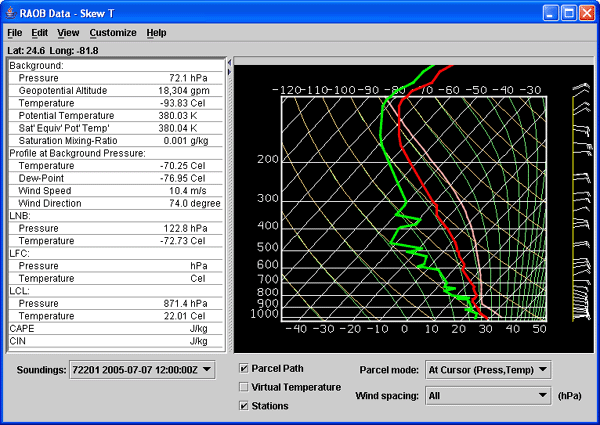

Upper Air RAOB sounding data can be accessed and displayed in the IDV as
skew-T log-p, Stuve or Emagram displays, with a table of
aerological values. More than one station and more than one sounding
at each station can be loaded at once.
- Open the RAOB Data Source Chooser and Select a Time
- [ht::openDataSourceChooser]
- In the [ht::dialog Data Source Chooser] click on the
[ht::command RAOB] tab.
- Click on the [ht::command {Soundings: Remote}] tab.
- In the
[ht::command Server:] entry box, select the remote ADDE server
[ht::command adde.ucar.edu].
[ht::command Group:] entry box, select [ht::command RTPTSRC]. Make
sure the [ht::command {00 & 12Z only}] box is checked
- Click on [ht::button Connect].
- The IDV will connect to the ADDE server at adde.ucar.edu and
download metadata about available RAOB data. Data times you can get
from this server are listed in the box [ht::command Available Times:].
- Select the 00 and 12 times for today.
- Zooming and Decluttering the Selector, and Selecting Stations
- The map only shows a few stations, so you need to zoom in
and declutter. [ht::mapSelector]
More stations will appear when you zoom in and declutter.
Find station 72201 (Key West) southwest of Miami, Florida.
- Click on that station. It will turn red,
and it will be listed with the data times in the
[ht::command Selected Soundings:] box.
- Select another station, 72214, north of 72201, by holding down the
Ctrl key and clicking on 72214. Both stations now should be red.
[ht::cimg images/RaobChooser.gif]
- Four entries should be in the [ht::command Selected Soundings:] box.
Click the [ht::button Add Source]
button at the bottom of the selector window.
You should see the label [ht::command RAOB data: adde.ucar.edu] in the
[ht::command Data Sources] panel in the [ht::dialog Field Selector].
If the [ht::command Create display] checkbox was selected in the
chooser, the data will be read from the server and a
[ht::display Skew-T] display will be created. If not then
create it:
- In the [ht::dialog Field Selector] window create a
[ht::display RAOB Skew-T] display using
the [ht::param RAOB Data] field.
The skew-T plot appears in its own control window in the
[ht::dialog Dashboard], with the data
from the first station and time plotted.
Skew-T plots of RAOB data have a station selector box
labeled [ht::command Soundings]. Undock the
[ht::display Skew-T] control from the Dashboard with the
[ht::menu View {Undock from Dashboard}] menu.

Using the Skew-T Control
- The skew-T plot, wind barb staff, and associated aerological
table are all in the control window.
- Move the mouse pointer over the skew-T Plot and see the values
on the plot listed in the table.
- Use the [ht::command Soundings] selector box to
change station and time selection.
- Use the [ht::menu Customize {Display Types} Stuve] menu item
to change the display to a Stuve.
- Show the idealized parcel path by checking the
[ht::button {Parcel Path}] checkbox. Change the
Parcel mode: to the
[ht::param {At Cursor Pressure}] option. Click in the
display with the middle mouse button to show the parcel
path from that pressure.
- Modify the sounding by clicking and dragging on the temperature
profile. Change the
Parcel mode: to the
[ht::param {At Cursor (Press,Temp)}] option. Click in the
display with the middle mouse button to show the parcel
from new locations on the modified sounding. For more information,
see
[ht::popup "UsingSoundingDisplays.html" "Using the IDV Sounding Displays"]
- Reset the profile with the [ht::menu Edit {Reset Sounding}]
menu.
Remove All Displays and Data
- [ht::clearDisplaysAndData]